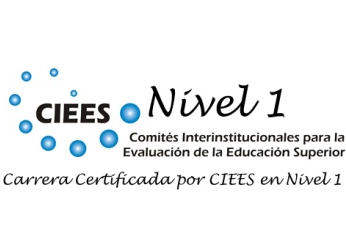

Licenciatura en
Enseñanza de las Matemáticas
Reconocimientos
Programa en Nivel 1 de CIEES
Objetivos
La Licenciatura en Enseñanza de las Matemáticas (LEM) tiene como objetivo formar profesionales socialmente responsables y competentes en Matemáticas y su Didáctica, en los niveles educativos medio superior y superior.
Informes
Facultad de Matemáticas
Periférico Norte Tablaje 13615,
Junto al local del FUTV.
Telefónos: 942 31 40 al 49
Horario: 8:00 a 20:00 horas.
http://www.matematicas.uady.mx/
M. en C. Estelita García: estelita.garcia@correo.uady.mx
Coordinadora de la Licenciatura en Enseñanza de las Matemáticas
Perfil de Ingreso
Teniendo en mente la visión UADY a 2020, el Plan de Desarrollo Institucional establece como uno de sus atributos:
Privilegiar la equidad en cuanto a las oportunidades de acceso, permanencia y terminación oportuna de los estudios, en particular de aquellos estudiantes en situación de marginación y desventaja (PDI, p. 70).
La Facultad de Matemáticas acorde con dicha visión, considera en el perfil de ingreso a la Licenciatura en Enseñanza de las Matemáticas:
El perfil de egreso para la Educación Media Superior en México, en el cual se consideran once competencias genéricas.Las competencias disciplinares básicas del área de Matemáticas que se proponen por el Sistema Nacional de Bachillerato.
Perfil de Egreso
El egresado de la Licenciatura en Enseñanza de las Matemáticas (LEM) es un profesionista que posee competencias en las áreas disciplinarias de las Matemáticas, pero sobre todo, posee competencias en la didáctica de cada una de las principales áreas de la Matemática que son abordados en los niveles educativos medio superior y superior; también posee un conjunto de competencias del área de las Tecnologías de la Información y de las Comunicaciones, que contribuyen en su formación para innovar en las diferentes modalidades educativas.
- Didáctica del Álgreba
- Didáctica de la Geometría
- Didáctica del Cálculo
- Didáctica de la probabilidad y Estadística
- Tecnologías de la Información y de la Comunicación